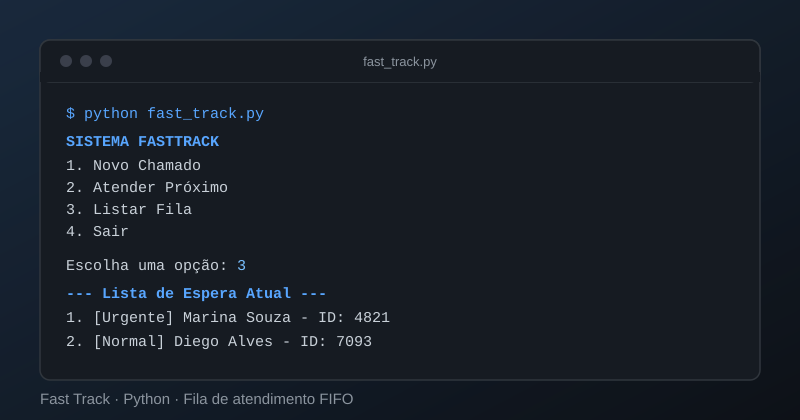
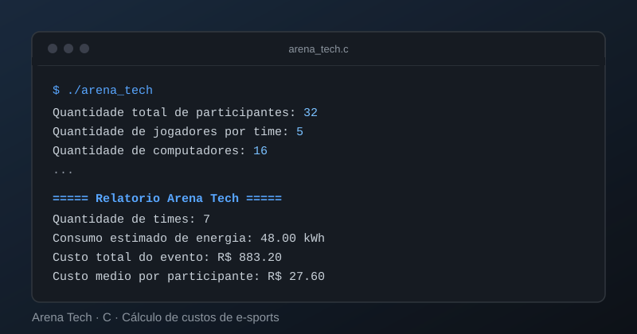

Fast Track
Disciplina: Fundamentos de Python (ADS)
Sistema de fila de atendimento (estilo help desk), desenvolvido em Python, com
cadastro de chamados, priorização, fila FIFO e tratamento de erros.
Minha participação: Desenvolvimento do código e apresentação, em grupo.
Ver no GitHub

Arena Tech
Disciplina: Fundamentos de Linguagem C (ADS)
Calculadora de custos para eventos de e-sports, desenvolvida em C, que calcula
número de times, consumo de energia, custo de alimentação e custo total do evento.
Minha participação: Desenvolvimento do código e apresentação, em grupo.
Ver no GitHub